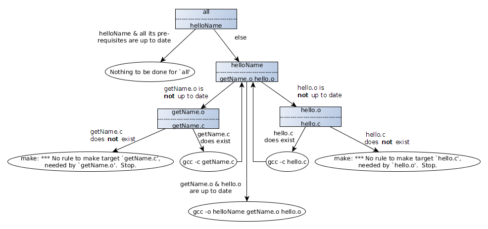

My first Make Build gimmickry
The goal of this article is to gain some fundamental knowledge about the (GNU) Make Build System. Below is a little program, which we want to compile.
hello.c
#include <stdio.h>
char* getName();
int main(int argc, char *argv[]) {
printf("name of prog: %s\n", argv[0]);
if(argc>1) {
printf("hello %s\n", argv[1]);
} else {
printf("hi %s\n", getName());
}
return 0;
}
|
getName.c
static char* name = "World";
char* getName() {
return name;
}
|
We can record all necessary steps within a file with the name "makefile".
A makefile consists of rules with following syntax:
targets : prerequisites
recipe
Targets are arbitrary names, often names of files. Prerequisites are basically other targets or files. The recipes are commands,
which get executed, when the rule is run. Note that a tab is required before the recipe!
A target is run with the command make and the name of a target. The make command then searches for a makefile in the directory
and within this a target with the specified name. After that it checks the prerequisites of the rule. When they wasn't changed since the last run,
make is a clever boy and only outputs make: Nothing to be done for `all'.. Otherwise it executes the recipe.
When the target all should be executed, the name of the target can be omitted.
|
makefile
all: helloName
helloName: getName.o hello.o
gcc -o helloName getName.o hello.o
getName.o: getName.c
gcc -c getName.c
hello.o: hello.c
gcc -c hello.c
clean:
rm *.o
@echo "Clean done"
|
Here is an flowchart for running
make with the given
makefile:

So running make a first time performs:
gcc -c getName.c
gcc -c hello.c
gcc -o helloName getName.o hello.o
|
And running it x-times after that without changing anything always results into:
make: Nothing to be done for `all'.
|
| The helloName-rule could also be rewritten as: |
helloName: getName.c hello.c
gcc -o helloName getName.c hello.c
|
But this has the disadvantage, that when
getName.c or
hello.c change, both get (re-)compiled first into
.o from
gcc,
before it is linked together. When one of them is really huge, it is nice to skip this work as with the extra rules in the given
makefile.
| The makefile to the right does exact the same as the makefile from before.
However it is a little bit shorter due to some fancy syntax-sugar / automatic variables.
I let expert assesses, if this is truly an improvement...
Here are explanations to these automatic variables.
|
makefile with fancy syntax
all: helloName
helloName: getName.o hello.o
gcc -o helloName $^
%.o: %.c
$(COMPILE.c) $(OUTPUT_OPTION) $<
clean:
rm *.o
@echo "Clean done"
|